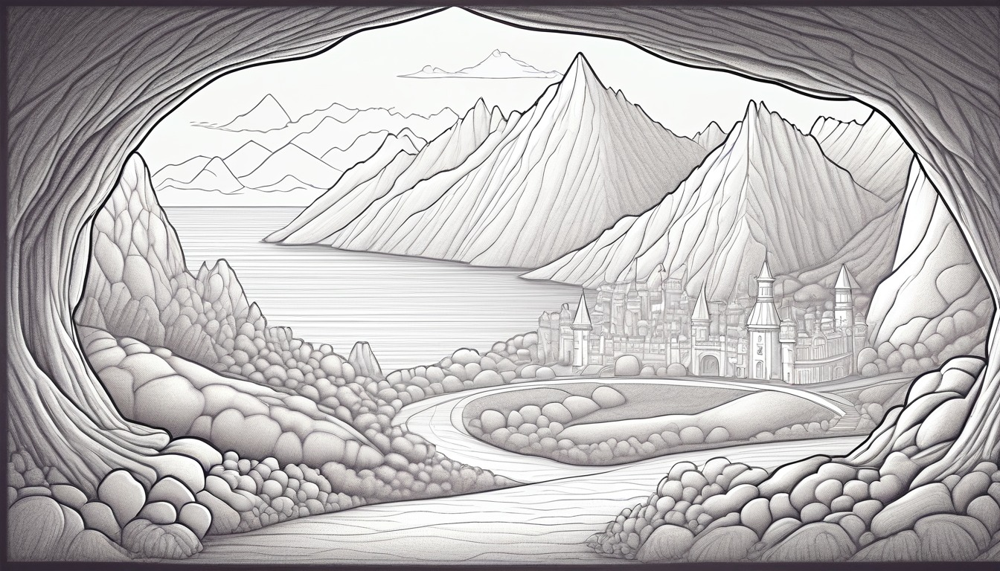

Sixteen paper page flag cards help writers support fictional story ideas with details, reasons, because bridges, reason-chain sentences, and page flag checks.
Audience: Families, homeschool groups, tutors, and adult-led writing tables for writers ages 7-11.
Format: 16 printable page flag story reason-chain cards plus adult guide tools, reason-chain routines, take-home reason slips, and optional adult prompts
Family-safe printable writing pages for adult-led, offline reason-chain practice.
$103
Included
16 printable page flag reason-chain cards
Adult setup guide
Fictional reason chain safety notes
Story idea prompts
First detail prompts
First reason prompts
Second detail prompts
Because bridge prompts
Reason-chain sentence prompts
Six adult-led reason-chain routines
Ten take-home reason slips
Printable PDF and ZIP artifact
Adult guide
Reason-chain coaching
Page Flag Story Reason Chain Adult Guide: ____________________.
Set out one reason-chain card, a blank page, pencil, and paper page flags before the adult-led session begins: ____________________.
Label seven paper lines story idea, first detail, first reason, second detail, because bridge, reason-chain sentence, and page flag check: ____________________.
Choose one pretend world and keep every character, place, object, detail, and reason invented: ____________________.
Tell the writer that dictated words, adult-scribed words, or independent writing all fit the offline paper-only activity: ____________________.
Place the page flag beside the reason-chain sentence so the writer can check one clear fictional connection: ____________________.
Facilitation notes
Start with a small story idea that can fit on one paper line: ____________________.
Ask for the first detail as one invented thing the writer can name or point to on the card: ____________________.
Ask for the first reason before adding the second detail so the chain has a clear middle: ____________________.
Use the because bridge to connect both details without adding real names or facts: ____________________.
Close with the page flag check so the writer marks a private paper sentence, not an outside task: ____________________.
Safety notes
Use invented characters, broad pretend places, and made-up details only: ____________________.
Keep the activity offline, paper-only, adult-led, and away from outside audiences: ____________________.
Skip any prompt that starts to ask for real names, real place details, or personal facts: ____________________.
Keep the reason-chain sentence about the pretend story, not about a real person or real event: ____________________.
Treat the page flag check as a quiet paper marker for this session: ____________________.
Use one story reason-chain card at a time. Keep every reason-chain sentence broad, invented, paper-only, and guided by an adult.
World menu
Sixteen reason chain card worlds
Pick a world image, then name the story idea, first detail, first reason, second detail, because bridge, reason-chain sentence, and page flag check.
Ages 7-9
Buttonwood Library Train

Ages 10-11
Pencil Dragon Academy
Ages 10-11
Compass Craft Academy
Ages 8-10
Pantry Measurement Mystery
Ages 7-9
Paperclip Plaza Parcel Day
Ages 8-10
Pond Bridge Blueprint Club
Ages 8-10
Tiny Lantern Reef
Ages 10-11
Appendix Archive Lab
Ages 10-11
Blue Pencil Observatory
Ages 10-11
Chapter Gate Greenhouse
Ages 8-10
Moss Message Observatory
Ages 7-9
Pocket Park Notice Board
Ages 7-9
Rain Boot Route Rangers
Ages 8-10
Tidepool Timekeepers Lab
Ages 10-11
Clue Label Tower Museum
Ages 7-8
Teacup Town Weather Window
Reason-chain routines
Choose the story reason-chain routine
Use when the writer needs one small fictional idea before choosing details: ____________________.
Story Idea Start: ____________________.
The adult places the story idea line at the top of the blank page: ____________________.
The writer names one made-up choice, question, or change inside the pretend world: ____________________.
The writer completes this line: My story idea is ____________________.
The adult rereads the story idea and keeps it ready for the first detail: ____________________.
Use when the story idea needs one invented detail to begin the reason chain: ____________________.
First Detail Anchor: ____________________.
The adult points to the first detail line and asks what pretend detail helps the idea: ____________________.
The writer chooses one object, mark, sound, color, signal, or tiny change from the fictional world: ____________________.
The writer completes this line: My first detail is ____________________.
The adult places the first detail under the story idea without adding real facts: ____________________.
Use when the first detail is ready but its meaning is still missing: ____________________.
First Reason Link: ____________________.
The adult rereads the story idea and first detail in order: ____________________.
The writer tells why the first detail helps the story idea make sense: ____________________.
The writer completes this line: My first reason is ____________________.
The adult keeps the first reason short and inside the pretend story: ____________________.
Use when the reason chain needs one more invented detail that supports the same idea: ____________________.
Second Detail Support: ____________________.
The adult points to the second detail line and rereads the story idea: ____________________.
The writer names a different pretend detail that supports the same reason chain: ____________________.
The writer completes this line: My second detail is ____________________.
The adult checks that the second detail helps the same idea instead of starting a new one: ____________________.
Use when the story idea, first detail, first reason, and second detail are ready to connect: ____________________.
Because Bridge Builder: ____________________.
The adult lays the first detail and second detail lines beside the because bridge line: ____________________.
The adult asks how both details help the same pretend reason: ____________________.
The writer completes this line: My because bridge is ____________________.
The adult trims the bridge to one clear phrase before the reason-chain sentence: ____________________.
Use at the end of a paper session to combine the parts and mark the page flag check: ____________________.
The adult reads the story idea, first detail, first reason, second detail, and because bridge in order: ____________________.
The writer completes this line: My reason-chain sentence is ____________________.
The adult asks whether the sentence uses only invented story details: ____________________.
The writer completes this line: My page flag check says ____________________.
Take-home reason slips
Try one reason chain later
Take-home reason slip
Story Idea Slip: ____________________.
My story idea is ____________________.
Ask for one small made-up idea that belongs inside the pretend world: ____________________.
Take-home reason slip
First Detail Slip: ____________________.
My first detail is ____________________.
Choose one invented object, mark, signal, or tiny change that helps the story idea: ____________________.
Take-home reason slip
First Reason Slip: ____________________.
My first reason is ____________________.
Ask why the first detail helps the pretend story idea make sense: ____________________.
Take-home reason slip
Second Detail Slip: ____________________.
My second detail is ____________________.
Choose a different invented detail that supports the same reason chain: ____________________.
Take-home reason slip
Because Bridge Slip: ____________________.
My because bridge is ____________________.
Use a short phrase that connects both details to the reason: ____________________.
Take-home reason slip
Reason-Chain Sentence Slip: ____________________.
My reason-chain sentence is ____________________.
Combine the story idea, first detail, first reason, second detail, and because bridge in one sentence: ____________________.
Take-home reason slip
Page Flag Check Slip: ____________________.
My page flag check says this sentence stays invented because ____________________.
Use this as a quiet paper check, not a correction mark: ____________________.
Take-home reason slip
Detail Pair Slip: ____________________.
My first detail and second detail fit together because ____________________.
Reread both detail lines before filling the blank: ____________________.
Take-home reason slip
Short Chain Slip: ____________________.
The shortest reason chain I can write is ____________________.
Frame this as paper sorting so the sentence stays clear: ____________________.
Take-home reason slip
Next Paper Flag Slip: ____________________.
The next paper flag could mark this invented reason: ____________________.
Save the slip for another adult-led offline writing session: ____________________.
Optional adult prompts
Which story idea feels small enough for one paper line: ____________________.
What first detail can the writer invent without using real people or real places: ____________________.
What first reason explains why that detail matters inside the pretend story: ____________________.
What second detail helps the same story idea in a different way: ____________________.
Which words can become the because bridge without adding real facts: ____________________.
What reason-chain sentence uses the story idea, first detail, first reason, second detail, and because bridge: ____________________.
What page flag check shows the sentence stayed invented and paper-only: ____________________.
Which line can stay blank until the writer is ready to dictate or write it: ____________________.
Reason Chain Card 1 | Ages 7-9 | Connect a fictional story idea to a first detail, first reason, second detail, because bridge, reason-chain sentence, and page flag check on paper: ____________________.
Buttonwood Library Train Page Flag Reason Chain Card
Buttonwood Library Train
Adult setup: Adult: set out one blank page, pencil, and two paper page flags before the invented train-library scene begins: ____________________.
Writer: invent a buttonwood train car, a quiet shelf bell, and a helper who notices why one tiny change matters: ____________________.
Story idea
story idea: write one made-up idea about what the Buttonwood train helper wants to understand: ____________________.
First detail
first detail: write one invented train-car detail that starts the reason chain: ____________________.
First reason
first reason: write why that first detail matters inside the pretend story: ____________________.
Second detail
second detail: write one different buttonwood detail that supports the same story idea: ____________________.
Because bridge
because bridge: write the words that connect both details to the reason: ____________________.
Reason-chain sentence
reason-chain sentence: combine the story idea, first detail, first reason, second detail, and because bridge in one sentence: ____________________.
Page flag check
page flag check: mark the paper flag when the reason-chain sentence stays invented and clear: ____________________.
Quiet option: fill only the story idea, first detail, and page flag check blanks first: ____________________. Take-home line: keep this paper card and add one new Buttonwood train detail later with an adult: ____________________.
Reason Chain Card 2 | Ages 10-11 | Build a fictional reason chain by linking a story idea, first detail, first reason, second detail, because bridge, reason-chain sentence, and page flag check: ____________________.
Pencil Dragon Academy Page Flag Reason Chain Card
Pencil Dragon Academy
Adult setup: Adult: place a blank page, pencil, and paper page flags beside the invented academy card: ____________________.
Writer: make up a pencil dragon, a practice slate, and a classroom signal while every answer stays fictional: ____________________.
Story idea
story idea: write one made-up idea about what the pencil dragon is trying to figure out: ____________________.
First detail
first detail: write one invented mark, tool, or academy object that points toward the idea: ____________________.
First reason
first reason: write why that first detail helps explain the pencil dragon's choice: ____________________.
Second detail
second detail: write one different academy detail that supports the same reason chain: ____________________.
Because bridge
because bridge: write a short bridge that connects the two details without adding real facts: ____________________.
Reason-chain sentence
reason-chain sentence: write one sentence that shows the story idea and both details working together: ____________________.
Page flag check
page flag check: mark the paper flag when the reason-chain sentence uses only invented academy details: ____________________.
Quiet option: fill the two detail blanks before writing the reason-chain sentence: ____________________. Take-home line: keep this paper card and invent one more pencil dragon reason later with an adult: ____________________.
Reason Chain Card 3 | Ages 10-11 | Practice fictional reason-chain writing with a story idea, first detail, first reason, second detail, because bridge, reason-chain sentence, and page flag check: ____________________.
Compass Craft Academy Page Flag Reason Chain Card
Compass Craft Academy
Adult setup: Adult: set one blank page, pencil, and paper page flags near the compass craft prompt: ____________________.
Writer: invent a compass maker, a craft table, and a pointer problem while all places and people stay made up: ____________________.
Story idea
story idea: write one invented idea about what the compass maker needs to decide: ____________________.
First detail
first detail: write one pretend pointer, tool, or table detail that begins the reason chain: ____________________.
First reason
first reason: write why the first detail helps the compass maker think clearly: ____________________.
Second detail
second detail: write one different craft detail that supports the same story idea: ____________________.
Because bridge
because bridge: write a bridge phrase that explains how the details connect: ____________________.
Reason-chain sentence
reason-chain sentence: write one sentence that links the story idea to both details and the reason: ____________________.
Page flag check
page flag check: mark the paper flag when the sentence explains why the pretend choice makes sense: ____________________.
Quiet option: dictate the first reason to the adult, then copy one short phrase: ____________________. Take-home line: keep this paper card and add one new compass craft detail later with an adult: ____________________.
Reason Chain Card 4 | Ages 8-10 | Use fictional measurement details to form a story idea, first detail, first reason, second detail, because bridge, reason-chain sentence, and page flag check: ____________________.
Pantry Measurement Mystery Page Flag Reason Chain Card
Pantry Measurement Mystery
Adult setup: Adult: set out a blank page, pencil, and paper page flags for an invented measuring-shelf mystery with no tasting or advice: ____________________.
Writer: invent a measuring shelf, a cup mark, and a helper who compares pretend clues on paper: ____________________.
Story idea
story idea: write one made-up idea about what the helper thinks the measurement mystery means: ____________________.
First detail
first detail: write one invented cup mark, shelf tag, or measuring line that begins the reason chain: ____________________.
First reason
first reason: write why that first detail matters to the pretend mystery: ____________________.
Second detail
second detail: write one different measuring-shelf detail that supports the same idea: ____________________.
Because bridge
because bridge: write how the two details work together in the pretend story: ____________________.
Reason-chain sentence
reason-chain sentence: write one sentence that connects the story idea to the details and reason: ____________________.
Page flag check
page flag check: mark the paper flag when the reason chain stays fictional and paper-only: ____________________.
Quiet option: fill the story idea and first detail blanks, then pause: ____________________. Take-home line: keep this paper card and add one new pretend measuring detail later with an adult: ____________________.
Reason Chain Card 5 | Ages 7-9 | Shape a fictional reason chain from a story idea, first detail, first reason, second detail, because bridge, reason-chain sentence, and page flag check: ____________________.
Paperclip Plaza Parcel Day Page Flag Reason Chain Card
Paperclip Plaza Parcel Day
Adult setup: Adult: place a blank page, pencil, and paper page flags beside the invented plaza parcel card: ____________________.
Writer: make up a paperclip plaza, a folded parcel, and a helper who notices two invented details: ____________________.
Story idea
story idea: write one made-up idea about what the parcel helper wants to solve: ____________________.
First detail
first detail: write one pretend paperclip, fold, or plaza mark that starts the reason chain: ____________________.
First reason
first reason: write why the first detail helps the helper understand the parcel: ____________________.
Second detail
second detail: write one different parcel-day detail that gives more support: ____________________.
Because bridge
because bridge: write a short bridge that tells why the details fit together: ____________________.
Reason-chain sentence
reason-chain sentence: write one sentence that includes the story idea, both details, and the reason: ____________________.
Page flag check
page flag check: mark the paper flag when every detail is invented and private to the paper: ____________________.
Quiet option: draw a tiny paperclip mark first, then fill one blank with words: ____________________. Take-home line: keep this paper card and add one new parcel-day reason later with an adult: ____________________.
Reason Chain Card 6 | Ages 8-10 | Plan a fictional reason chain using a story idea, first detail, first reason, second detail, because bridge, reason-chain sentence, and page flag check: ____________________.
Pond Bridge Blueprint Club Page Flag Reason Chain Card
Pond Bridge Blueprint Club
Adult setup: Adult: set one blank page, pencil, and paper page flags near the invented pond bridge blueprint card: ____________________.
Writer: invent a tiny pond bridge, a folded blueprint, and a club helper who explains one choice: ____________________.
Story idea
story idea: write one made-up idea about what the bridge helper decides to try: ____________________.
First detail
first detail: write one invented plank mark, pond ripple, or blueprint note that begins the chain: ____________________.
First reason
first reason: write why the first detail supports the helper's bridge idea: ____________________.
Second detail
second detail: write one different pond bridge detail that supports the same story idea: ____________________.
Because bridge
because bridge: write the bridge words that connect both details to the reason: ____________________.
Reason-chain sentence
reason-chain sentence: write one sentence that explains the bridge helper's idea with both details: ____________________.
Page flag check
page flag check: mark the paper flag when the sentence gives a clear pretend reason: ____________________.
Quiet option: fill the because bridge as a sentence starter before adding the final sentence: ____________________. Take-home line: keep this paper card and add one new blueprint detail later with an adult: ____________________.
Reason Chain Card 7 | Ages 8-10 | Connect reef details in a fictional story idea, first detail, first reason, second detail, because bridge, reason-chain sentence, and page flag check: ____________________.
Tiny Lantern Reef Page Flag Reason Chain Card
Tiny Lantern Reef
Adult setup: Adult: place a blank page, pencil, and paper page flags beside the invented reef lantern card: ____________________.
Writer: make up a tiny reef lantern, a glow pattern, and a helper who uses two details to explain a choice: ____________________.
Story idea
story idea: write one invented idea about what the reef helper needs to understand: ____________________.
First detail
first detail: write one pretend glow, shell shape, or waterline mark that begins the reason chain: ____________________.
First reason
first reason: write why that first detail helps the helper's story idea: ____________________.
Second detail
second detail: write one different lantern reef detail that supports the same idea: ____________________.
Because bridge
because bridge: write how the two reef details connect to the reason: ____________________.
Reason-chain sentence
reason-chain sentence: write one sentence that links the story idea, details, and reason: ____________________.
Page flag check
page flag check: mark the paper flag when the sentence stays calm, fictional, and clear: ____________________.
Quiet option: fill the first detail and second detail blanks before adding the reason: ____________________. Take-home line: keep this paper card and add one new lantern reef reason later with an adult: ____________________.
Reason Chain Card 8 | Ages 10-11 | Develop a fictional reason chain with a story idea, first detail, first reason, second detail, because bridge, reason-chain sentence, and page flag check: ____________________.
Appendix Archive Lab Page Flag Reason Chain Card
Appendix Archive Lab
Adult setup: Adult: set one blank page, pencil, and paper page flags for the invented archive lab card: ____________________.
Writer: invent a lab drawer, a labeled tray, and an archive helper while every reason stays made up: ____________________.
Story idea
story idea: write one made-up idea about what the archive helper is trying to explain: ____________________.
First detail
first detail: write one invented tray mark, folder shape, or lab object that starts the reason chain: ____________________.
First reason
first reason: write why that first detail matters to the helper's explanation: ____________________.
Second detail
second detail: write one different archive lab detail that supports the same explanation: ____________________.
Because bridge
because bridge: write a bridge that connects both invented details to one reason: ____________________.
Reason-chain sentence
reason-chain sentence: write one sentence that explains the story idea with both details and the reason: ____________________.
Page flag check
page flag check: mark the paper flag when the reason-chain sentence has no real names or facts: ____________________.
Quiet option: adult-scribe the reason-chain sentence after the writer points to both details: ____________________. Take-home line: keep this paper card and add one new archive lab detail later with an adult: ____________________.
Reason Chain Card 9 | Ages 10-11 | Use observation in a fictional reason chain with a story idea, first detail, first reason, second detail, because bridge, reason-chain sentence, and page flag check: ____________________.
Blue Pencil Observatory Page Flag Reason Chain Card
Blue Pencil Observatory
Adult setup: Adult: place a blank page, pencil, and paper page flags near the invented observatory prompt: ____________________.
Writer: make up a blue pencil telescope, a sky chart, and a helper who explains what two details suggest: ____________________.
Story idea
story idea: write one invented idea about what the observatory helper notices: ____________________.
First detail
first detail: write one pretend pencil mark, lens shape, or sky chart detail that begins the chain: ____________________.
First reason
first reason: write why the first detail helps explain the helper's idea: ____________________.
Second detail
second detail: write one different observatory detail that gives more support: ____________________.
Because bridge
because bridge: write how the two details point toward the same reason: ____________________.
Reason-chain sentence
reason-chain sentence: write one sentence that connects the story idea to the two details and reason: ____________________.
Page flag check
page flag check: mark the paper flag when the sentence uses invented observatory details only: ____________________.
Quiet option: fill the because bridge first with a short phrase, then add details: ____________________. Take-home line: keep this paper card and add one new blue pencil detail later with an adult: ____________________.
Reason Chain Card 10 | Ages 10-11 | Explain a fictional greenhouse choice through a story idea, first detail, first reason, second detail, because bridge, reason-chain sentence, and page flag check: ____________________.
Chapter Gate Greenhouse Page Flag Reason Chain Card
Chapter Gate Greenhouse
Adult setup: Adult: set a blank page, pencil, and paper page flags beside the invented gate greenhouse card: ____________________.
Writer: invent a greenhouse gate, a plant marker, and a keeper who reasons through two pretend details: ____________________.
Story idea
story idea: write one made-up idea about what the greenhouse keeper decides: ____________________.
First detail
first detail: write one invented gate hinge, leaf mark, or greenhouse object that starts the chain: ____________________.
First reason
first reason: write why the first detail supports the keeper's story idea: ____________________.
Second detail
second detail: write one different greenhouse detail that supports the same idea: ____________________.
Because bridge
because bridge: write bridge words that show how both details lead to the reason: ____________________.
Reason-chain sentence
reason-chain sentence: write one sentence that joins the story idea, both details, and the reason: ____________________.
Page flag check
page flag check: mark the paper flag when the reason chain stays pretend and paper-only: ____________________.
Quiet option: fill only the story idea, first reason, and page flag check blanks first: ____________________. Take-home line: keep this paper card and invent one more greenhouse reason later with an adult: ____________________.
Reason Chain Card 11 | Ages 8-10 | Write a fictional reason chain from a moss message story idea, first detail, first reason, second detail, because bridge, reason-chain sentence, and page flag check: ____________________.
Moss Message Observatory Page Flag Reason Chain Card
Moss Message Observatory
Adult setup: Adult: place one blank page, pencil, and paper page flags near the invented moss observatory card: ____________________.
Writer: make up a moss message wall, a lookout window, and a helper who explains why two details belong together: ____________________.
Story idea
story idea: write one invented idea about what the moss message might mean: ____________________.
First detail
first detail: write one pretend moss shape, window mark, or lookout detail that begins the reason chain: ____________________.
First reason
first reason: write why that first detail helps explain the moss message: ____________________.
Second detail
second detail: write one different observatory detail that supports the same story idea: ____________________.
Because bridge
because bridge: write how the two details connect to the same reason: ____________________.
Reason-chain sentence
reason-chain sentence: write one sentence that uses the story idea, both details, and the reason: ____________________.
Page flag check
page flag check: mark the paper flag when the sentence is clear and fully invented: ____________________.
Quiet option: whisper the first reason to the adult, then write one key word: ____________________. Take-home line: keep this paper card and add one new moss message detail later with an adult: ____________________.
Reason Chain Card 12 | Ages 7-9 | Link a fictional park-board story idea to a first detail, first reason, second detail, because bridge, reason-chain sentence, and page flag check: ____________________.
Pocket Park Notice Board Page Flag Reason Chain Card
Pocket Park Notice Board
Adult setup: Adult: set out one blank page, pencil, and paper page flags beside the invented pocket park card: ____________________.
Writer: invent a tiny notice board, a folded sign, and a helper who notices why two details fit: ____________________.
Story idea
story idea: write one made-up idea about what the park helper wants to understand: ____________________.
First detail
first detail: write one pretend sign fold, board pin, or path mark that begins the reason chain: ____________________.
First reason
first reason: write why the first detail helps explain the story idea: ____________________.
Second detail
second detail: write one different pocket park detail that supports the same idea: ____________________.
Because bridge
because bridge: write the connecting words that show why both details matter: ____________________.
Reason-chain sentence
reason-chain sentence: write one sentence that connects the story idea to the two details and reason: ____________________.
Page flag check
page flag check: mark the paper flag when the reason-chain sentence stays invented and private to the paper: ____________________.
Quiet option: fill the two detail blanks and save the sentence for later: ____________________. Take-home line: keep this paper card and add one new pocket park reason later with an adult: ____________________.
Reason Chain Card 13 | Ages 7-9 | Create a fictional reason chain with a story idea, first detail, first reason, second detail, because bridge, reason-chain sentence, and page flag check: ____________________.
Rain Boot Route Rangers Page Flag Reason Chain Card
Rain Boot Route Rangers
Adult setup: Adult: place a blank page, pencil, and paper page flags near the invented rain boot route ranger card: ____________________.
Writer: make up rain boots, puddle marks, and a route ranger helper who explains a pretend trail choice: ____________________.
Story idea
story idea: write one invented idea about what the rain boot route helper decides: ____________________.
First detail
first detail: write one pretend boot print, puddle shape, or trail marker that starts the reason chain: ____________________.
First reason
first reason: write why the first detail helps the helper make the pretend choice: ____________________.
Second detail
second detail: write one different rain boot route detail that supports the same story idea: ____________________.
Because bridge
because bridge: write a bridge phrase that connects both details to the reason: ____________________.
Reason-chain sentence
reason-chain sentence: write one sentence that explains the helper's story idea with both details: ____________________.
Page flag check
page flag check: mark the paper flag when the sentence uses made-up trail details only: ____________________.
Quiet option: fill the first detail and first reason blanks before adding the second detail: ____________________. Take-home line: keep this paper card and invent one more rain boot route reason later with an adult: ____________________.
Reason Chain Card 14 | Ages 8-10 | Organize a fictional tidepool reason chain with a story idea, first detail, first reason, second detail, because bridge, reason-chain sentence, and page flag check: ____________________.
Tidepool Timekeepers Lab Page Flag Reason Chain Card
Tidepool Timekeepers Lab
Adult setup: Adult: set a blank page, pencil, and paper page flags near the invented tidepool lab card: ____________________.
Writer: invent a tidepool clock, a lab tray, and a timekeeper who explains why two details matter: ____________________.
Story idea
story idea: write one made-up idea about what the timekeeper is trying to explain: ____________________.
First detail
first detail: write one pretend shell clock, tray mark, or waterline detail that begins the chain: ____________________.
First reason
first reason: write why the first detail helps explain the timekeeper's idea: ____________________.
Second detail
second detail: write one different tidepool lab detail that supports the same idea: ____________________.
Because bridge
because bridge: write how both details point to the same reason: ____________________.
Reason-chain sentence
reason-chain sentence: write one sentence that links the story idea, both details, and the reason: ____________________.
Page flag check
page flag check: mark the paper flag when the reason-chain sentence stays inside the pretend lab: ____________________.
Quiet option: use adult-scribed words for the because bridge, then write one detail yourself: ____________________. Take-home line: keep this paper card and add one new tidepool timekeeper detail later with an adult: ____________________.
Reason Chain Card 15 | Ages 10-11 | Build a fictional clue-label reason chain from a story idea, first detail, first reason, second detail, because bridge, reason-chain sentence, and page flag check: ____________________.
Clue Label Tower Museum Page Flag Reason Chain Card
Clue Label Tower Museum
Adult setup: Adult: place one blank page, pencil, and paper page flags beside the invented tower museum card: ____________________.
Writer: make up a clue label tower, a quiet exhibit alcove, and a helper who reasons from two invented details: ____________________.
Story idea
story idea: write one invented idea about what the tower helper thinks the clue label means: ____________________.
First detail
first detail: write one pretend label mark, tower step, or alcove object that begins the reason chain: ____________________.
First reason
first reason: write why the first detail supports the helper's story idea: ____________________.
Second detail
second detail: write one different tower museum detail that supports the same idea: ____________________.
Because bridge
because bridge: write a short bridge that connects both details to the reason: ____________________.
Reason-chain sentence
reason-chain sentence: write one sentence that explains the story idea with both details and the reason: ____________________.
Page flag check
page flag check: mark the paper flag when the reason-chain sentence uses no real exhibit names or facts: ____________________.
Quiet option: fill the story idea and because bridge first, then add the details: ____________________. Take-home line: keep this paper card and add one new clue label detail later with an adult: ____________________.
Reason Chain Card 16 | Ages 7-8 | Write a gentle fictional reason chain with a story idea, first detail, first reason, second detail, because bridge, reason-chain sentence, and page flag check: ____________________.
Teacup Town Weather Window Page Flag Reason Chain Card
Teacup Town Weather Window
Adult setup: Adult: set one blank page, pencil, and paper page flags near the invented weather window card: ____________________.
Writer: invent a teacup window, a tiny weather signal, and a helper who explains one small change: ____________________.
Story idea
story idea: write one made-up idea about what the weather-window helper notices: ____________________.
First detail
first detail: write one pretend cloud mark, window shape, or teacup signal that begins the reason chain: ____________________.
First reason
first reason: write why the first detail helps explain the story idea: ____________________.
Second detail
second detail: write one different weather-window detail that supports the same idea: ____________________.
Because bridge
because bridge: write the words that connect both details to the reason: ____________________.
Reason-chain sentence
reason-chain sentence: write one sentence that uses the story idea, both details, and the reason: ____________________.
Page flag check
page flag check: mark the paper flag when the sentence stays pretend, short, and clear: ____________________.
Quiet option: fill the story idea and page flag check blanks first: ____________________. Take-home line: keep this paper card and add one new weather-window detail later with an adult: ____________________.